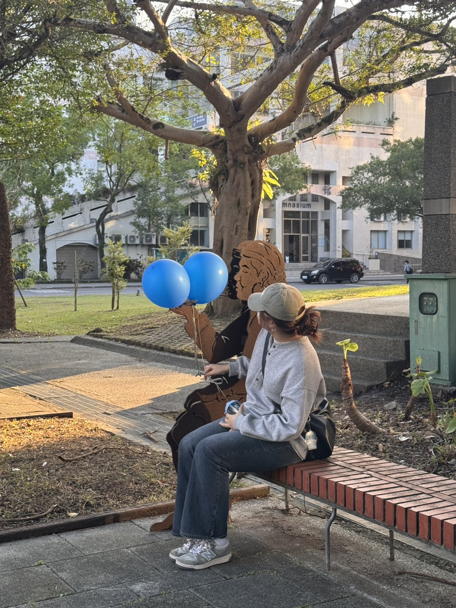

關於我們與網站理念
我們的製作團隊
一群熱衷於商業英語教育與數位學習的設計師和老師。
Instructional Activity Planner
教學活動策劃
負責將靜態內容轉化為互動式學習體驗。設計具體的教學流程與活動，同時負責追蹤學生的學習進度，並系統性地紀錄學習數據。
Curriculum Resource Coordinator- 教材資源統籌
負責課程內容的準備工作。主要任務是收集、整理、篩選相關的教學資源與素材，並設計、編寫所有練習或測驗題目。
Web Architecture Lead
網站架構
專注於網站的技術實現、編程與開發工作。負責確保網站的結構、功能與頁面（如 about.html, index.html）能正確運作，並與 Git 平台同步。
互動功能及 UI/UX 實現。

Feedback & Performance Analyst - 成效追蹤與回饋分析
負責數據收集的「後勤」工作。收集所有關於網站使用體驗、課程效果、學生滿意度的回饋資料，並分析這些資料，提出具體的優化建議。
Project Coordinator / Documentation Lead -專案總協調/文件撰寫
負責掌握專案總體進度，協調各組成員的工作流程，確保資訊流通順暢。同時，承擔最重要且最耗時的任務：成果統整、撰寫最終報告並進行演示。
Project Coordinator / Documentation Lead - 專案總協調/文件撰寫
負責掌握專案總體進度，協調各組成員的工作流程，確保資訊流通順暢。同時，承擔最重要且最耗時的任務：成果統整、撰寫最終報告並進行演示。
我們的教育使命
我們相信，學習商業英文不應該是枯燥的。我們的目標是透過「多模態輸入」（影片、文本、互動）的方式，將複雜的商業情境轉化為易於吸收的教材。
核心價值觀：
- 聚焦閱讀理解：透過 5W1H 訓練您提取資訊，而非僅僅翻譯單字。
- 實用情境導向：所有選材都來自真實或模擬的職場環境。
- 專注能力提升：透過錯題本和單字本，讓您追蹤自己的學習弱點。